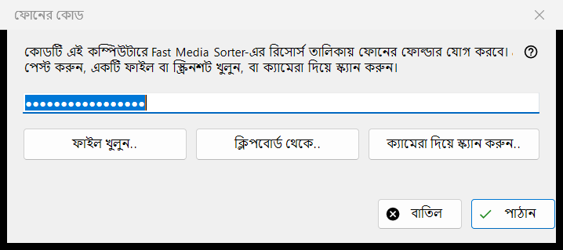
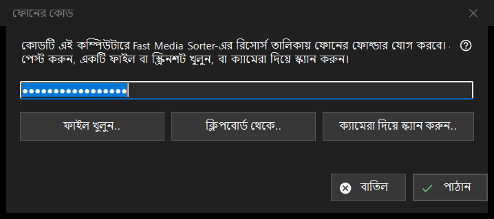

ফোনের কোড
এটি কীসের জন্য
ফোন অ্যাপে তৈরি সংযোগ কোড গ্রহণ করে এবং Fast Media Sorter-কে দেয়, যা ফোনের ফোল্ডার এই কম্পিউটারে তার রিসোর্স তালিকায় যোগ করে। Share Manager-এর মূল উইন্ডোর ফোন কোড.. বোতাম থেকে এটি খোলে।


এই ক্রমে
- চারটির একটি উপায়ে কোডটি উইন্ডোতে আনুন: ঘরে টাইপ বা পেস্ট করুন, অথবা ফাইল খুলুন.., ক্লিপবোর্ড থেকে.. বা ক্যামেরা দিয়ে স্ক্যান করুন.. বোতাম চাপুন।
- পাঠান চাপুন।
- যে Fast Media Sorter উইন্ডো আসবে তাতে ফোল্ডার যোগ করা নিশ্চিত করুন।
উপাদানসমূহ
সংযোগ কোড
এক লাইনের একটি ঘর, যা অক্ষরের জায়গায় বিন্দু দেখায় কারণ কোডটি গোপন; এটি কখনো লগে লেখা হয় না। ঘর ফাঁকা রেখে পাঠান চাপলে বলা হয় কোড টাইপ করতে, পেস্ট করতে, অথবা কোনো ফাইল বা স্ক্রিনশট খুলতে।
ফাইল, ক্লিপবোর্ড ও ক্যামেরা
ফাইল খুলুন.. .fmscfg, .json ও .txt ফাইল এবং QR ছবি (.png, .jpg, .jpeg, .bmp, .webp) পড়ে; ফাইল উইন্ডোর ওপর টেনে এনে ছাড়াও যায়। ক্লিপবোর্ড থেকে.. ক্লিপবোর্ড থেকে কোড পড়ে। ক্যামেরা দিয়ে স্ক্যান করুন.. ক্যামেরার উইন্ডো খোলে, এবং স্ক্যান করা লেখা এমনভাবে ধরা হয় যেন তা পেস্ট করা হয়েছে।
পাঠান
কোড যাচাই হয়, তারপর চলমান Fast Media Sorter-কে পাঠানো হয়, যার নিজস্ব আমদানি ডায়ালগ তখনও তার স্বাভাবিক প্রশ্ন করে। সফল হলে অবস্থায় লেখা আসে: কোড পাঠানো হয়েছে: Fast Media Sorter উইন্ডোতে যোগ করার নিশ্চিত করুন। এবং এই উইন্ডো বন্ধ হয়। Fast Media Sorter না পাওয়া গেলে, পুরনো সংস্করণ হলে বা উত্তর না দিলে কোডটি গোপনীয়তার চিহ্নসহ ক্লিপবোর্ডে রাখা হয়, এবং অবস্থার লাইন বলে রিসোর্স প্যানেলে ক্লিপবোর্ড থেকে আমদানি দিয়ে তা পেস্ট করতে।
অবস্থার লাইনের বার্তা
যে নথি সংযোগ কোড নয় এবং রিসোর্স সেটিংস ফাইলও নয়, তা পড়া যায় না বলে জানানো হয়। নতুন সংস্করণে তৈরি ফাইল Fast Media Sorter হালনাগাদ করতে বলে। অন্য কোনো প্রোগ্রাম ক্লিপবোর্ড ধরে রাখলে অবস্থা তা জানায়।
ম্যানেজার সেটিংস · SFTP শেয়ারিং সেটিংস · এক্সচেঞ্জ সার্ভার সেটিংস